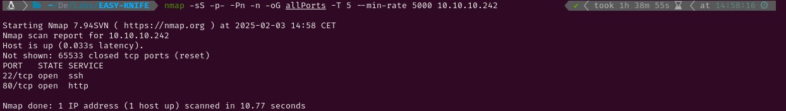

EASY - KNIFE
1. Recon
Nmap
nmap finds two open ports: SSH (22) and HTTP (80).

The NSE (Nmap Scripting Engine) finds the following information:
- The box is using Ubuntu
- The version of the SSH service is OpenSSH 8.2p1
- The port 80 HTTP server is using Apache httpd 2.4.41 and the title suggests the website is about a Emergent Medical Idea.

Website - TCP 80
The website displays an incomplete message and a ‘menu’ that doesn’t work. As gobuster hasn’t found any hidden files or directories and the source code doesn’t contain anything useful, I will try finding existing vulnerabilities for the technologies the website is using. These can be checked either in the DevTools or with an extension called Wappalyzer.


Searching exploits for every technology the website is using I find that PHP 8.1.0-dev is vulnerable to a Remote Code Execution.

2. Gaining Access
After reading this page, now I know this version of PHP is vulnerable because of two malicious commits that were pushed to the PHP Git code repo. These commits planted a backdoor that lets the attackers execute remote code in the server through the headers. Sending a User-Agentt header with the string ‘zerodium’ and a command allows the code execution. Using this script I get a shell and I send a reverse shell to my Kali so I can upgrade it to a fully interactive TTY.

3. Privilege Escalation
Root
In the james directory there is a script (knife.sh) which spawns a shell. It belongs to james so I will check what sudo permissions do I have. This shows that there is a binary called knife which I can run as sudo. Looking up ‘knife privesc’ in Google I find a GTFOBins article where I discover that I can run sudo knife exec -E 'exec "/bin/sh"' to spawn a shell with root permissions. Now I can read root.txt and submit the flag.